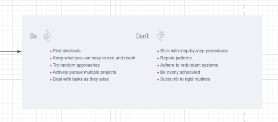

Adapt Your Conation: Why You Need to Skim

>>>
In the ever-evolving landscape of information and technology, our ability to adapt is crucial. One of the key skills in this adaptation is the art of skimming. Skimming is not just about reading quickly; it's about understanding the essence of information swiftly, using intuition, and leveraging technology and shortcuts to enhance our productivity and effectiveness.
The Essence of Skimming
Skimming allows you to grasp the main ideas without getting bogged down by every single detail. It's a vital skill in an age where information overload is a constant challenge. By skimming, you can quickly filter out the noise and focus on what's truly important. Here's why you need to master this skill:
-
Efficiency: Time is a finite resource. Skimming helps you save time by allowing you to get the gist of the content rapidly. This means you can cover more ground in less time, making you more efficient in your daily tasks.
-
Focus on Key Points: Not every piece of information is critical. Skimming enables you to identify and focus on the key points that matter, ensuring that you don't miss out on essential details while ignoring the less important ones.
-
Adaptability: In a fast-paced world, the ability to quickly adapt to new information is crucial. Skimming helps you stay updated and adaptable, ensuring that you're always in the loop.
Leveraging Technology and Shortcuts
To make the most of skimming, you need to leverage technology and shortcuts effectively. Here are some tips on how to do this:
-
Use Summary Tools: There are various tools and apps available that provide summaries of long articles and documents. Tools like Blinkist for books or the summary feature in apps like Evernote can be incredibly useful.
-
Highlight and Annotate: Use digital tools to highlight and annotate important sections of the text. This makes it easier to refer back to key points without having to re-read the entire document.
-
Voice-to-Text and Audiobooks: For those who prefer auditory learning, voice-to-text tools and audiobooks can be a great way to consume information quickly and efficiently.
-
Search Functions: Use the search function (Ctrl+F or Command+F) in digital documents to find specific keywords or topics quickly.
Intuition in Understanding
Skimming is not just a mechanical process; it involves intuition and cognitive skills. Here’s how to enhance your intuitive understanding while skimming:
-
Contextual Reading: Pay attention to the context. The surrounding text often provides clues that can help you understand the meaning of new or unfamiliar words.
-
Pattern Recognition: With practice, you'll start recognizing patterns in the way information is presented. This helps you predict the flow of information and understand the main points faster.
-
Critical Thinking: Engage your critical thinking skills. Ask yourself questions about the text, summarize the main ideas in your own words, and consider how the information fits into the bigger picture.
Dos and Don'ts of Effective Skimming
Do:
-
Find shortcuts that work for you.
-
Keep frequently used tools and resources easy to see and reach.
-
Try random approaches to find what works best.
-
Actively pursue multiple projects to develop a broad understanding.
-
Deal with tasks as they arise to prevent backlog.
Don't:
-
Stick with rigid step-by-step procedures.
-
Repeat the same patterns without evaluating their effectiveness.
-
Adhere to redundant systems that add no value.
-
Be overly scheduled to the point of inflexibility.
-
Succumb to rigid routines that stifle adaptability.
Conclusion
In conclusion, the ability to skim effectively is a critical skill in the modern world. By understanding the essence of information, leveraging technology and shortcuts, and relying on your intuition, you can stay ahead in an information-rich environment. Adapt your conation to embrace skimming, and you'll find yourself better equipped to handle the demands of today's fast-paced world.
Imported from rifaterdemsahin.com · 2024